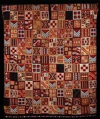

162. All-T’oqapu tunic. Inka. 1450- 1540 CE Camelid fiber and cotton.
- Form
- Rectangular shape; a slit in the center is for the head; then the tunic is folded in half and the sides are sewn for the arms
- The composition is composed of small rectangular shapes called t’oqapu
- Individual t’oqapu may be symbolic of individuals, events, or places
- This tunic contains a large number of t’oqapu
- Function
- Wearing such an elaborate garment indicates the status of the individual
- May have been worn by an Inkan ruler
- Technique
- Woven on a backstrap loom
- One end of the loom is tied to a tree or a post and the other end around the back of the weaver
- The movement of the weaver can create alternating tensions in the fabric and achieve different results
- Context
- Exhibits Inkan preference for abstract designs, standardization of designs, and an expression of unity and order
- Finest textiles made by women, a highly distinguished art form; this tunic has a hundred threats per square centimeter.